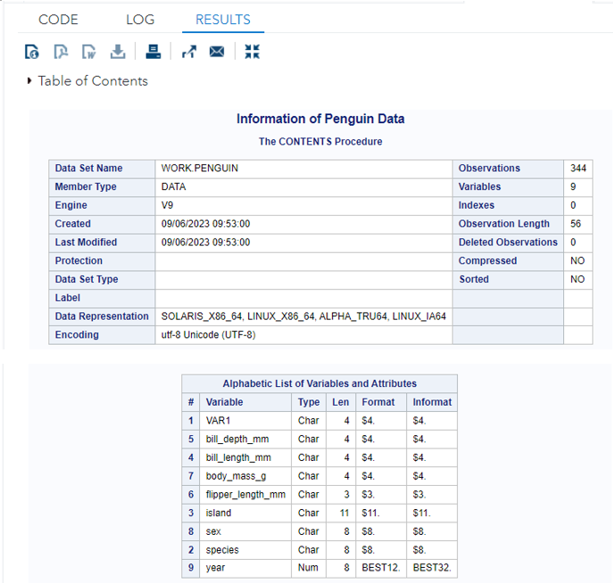
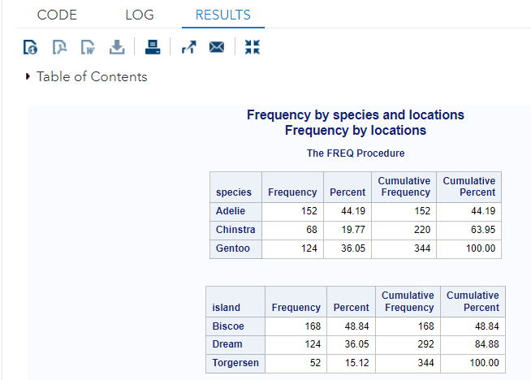
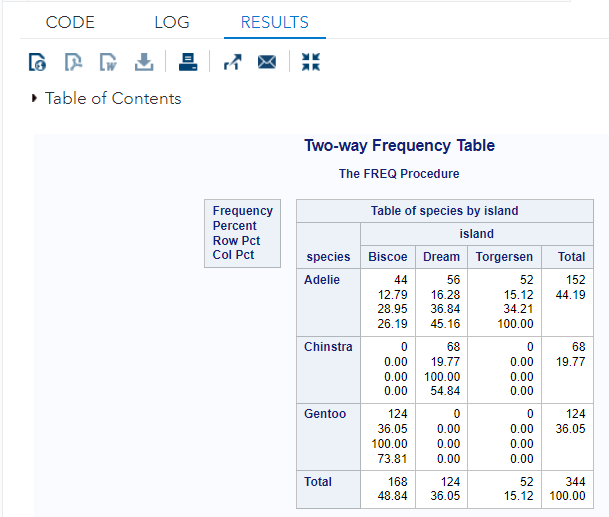
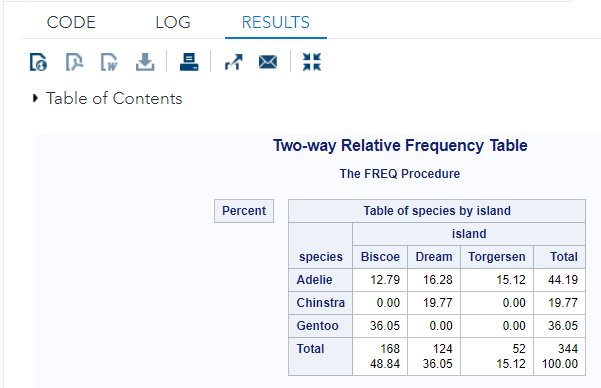
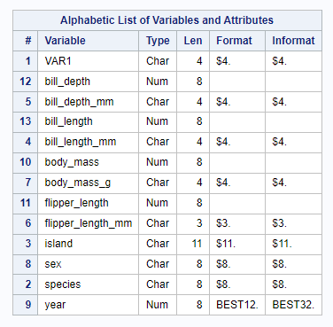
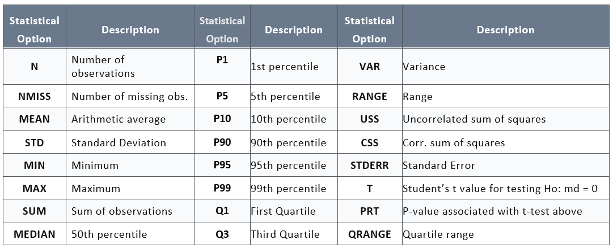
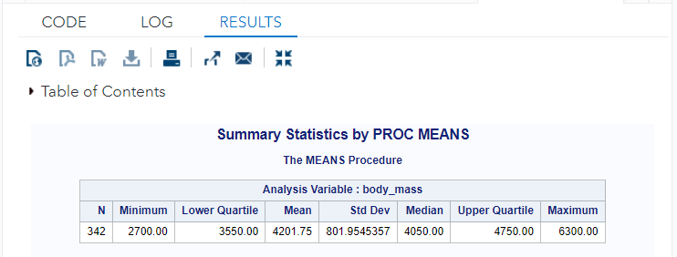
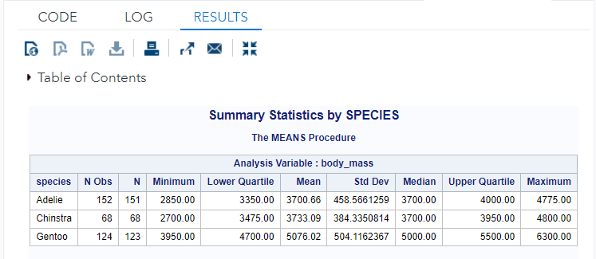
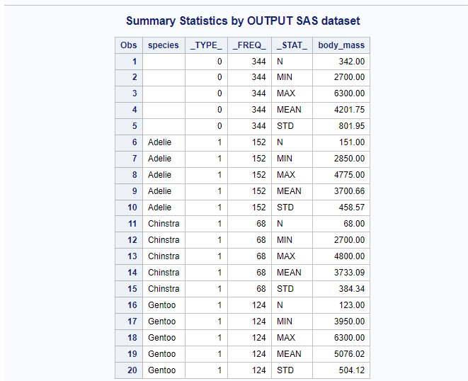

Chapter 6 Descriptive Statistics
Once we finish reading data to SAS, we can use SAS to perform basic descriptive analysis such as frequency tables, different charts for numerical measures, etc. For convenience, we use the following data set for all illustrative examples in this chapter.
This is data about penguins collected by Dr. Kristen Gorman and the Palmer Station in Antarctica. There are 344 cases and 7 columns. With both numerical and categorical variables, there are options for exploring, including looking for differentiators between the three species of penguin.
https://raw.githubusercontent.com/pengdsci/sta553/main/w02-penguins.csv
FILENAME pguin URL "https://raw.githubusercontent.com/pengdsci/sta553/main/w02-penguins.csv";
PROC IMPORT DATAFILE = pguin
OUT = penguin
DBMS = CSV
REPLACE;
GETNAMES = YES;
RUN;We first look at the types of variables in the working data set using PROC CONTENTS.
TITLE "Information of Penguin Data";
PROC CONTENTS DATA = penguin;
RUN;The output contains three tables, the second table contains information about the SAS engine. We only look at the first and the third table that contains data information.

We can see that there are 344 observations and 9 variables. All variables in the data set are in numerical form except for the year. We will use a SAS function to convert character variables to numerical variables in order to do appropriate analyses.
6.1 Frequency Table Analysis
We can use PROC FREQ to produce frequency tables based on categorical variables. We can also group numerical variables to create categorical variables and then create frequency tables. Group variables in a data set are considered as data manipulation, We will discuss this in later chapters. The next examples will use the existing categorical variables in the data set.
TITLE "Frequency by species and locations";
PROC FREQ DATA=penguin;
TABLES species; /* species table */
TABLES island; /* location table */
RUN;The above two procedures give the frequency distributions of species and island in the same procedure. A SAS program consists of individual data and procedure steps. Each procedure allows only one title and a few sub-titles, all titles and sub-titles are always printed on the top of the output of the procedure.

We can use two procedure steps to give specific titles for individual tables. We may want to know whether a particular species of penguin likes to live in a particular location. The two-way frequency table (cross-tabulation) gives this type of information.
TITLE "Two-way Frequency Table";
PROC FREQ DATA=penguin;
TABLES species * island; /* species table */
RUN;
Note the asterisk (*) between the variables species and island on the tables statement. The above two-way table contains four different frequencies. Sometimes, we may be interested in only one type of frequency. We can select a particular frequency to print out by using the norow, nocol, and nofreq options on the tables statement to suppress the printing of the row percentages, column percentages, and frequencies (leaving just the cell percentages). Note that the options come after the forward-slash ( / ) on the tables statement.
TITLE "Two-way Relative Frequency Table";
PROC FREQ DATA=penguin;
TABLES species * island / NOROW NOCOL NOFREQ ;
RUN;Note that the order of the options does not matter.

6.2 Numerical Summary Statistics
In elementary statistics, we learned several numerical measures of numerical data (variable) SAS procedures PROC MEANS and PROC UNIVARIATE calculate these numerical summary measures and also create plots such as basic statistical graphics as by-products.
Since some of the numerical variables stored in the data are in the character form, we first convert them back to numerical form in order to perform appropriate analysis.
DATA new_penguin; /* define a new data set */
SET Penguin; /* copy the data original data*/
body_mass = input(body_mass_g, 8.); /* conversion */
flipper_length = input(flipper_length_mm, 8.);
bill_depth = input(bill_depth_mm, 8.);
bill_length = input(bill_length_mm, 8.);
RUN;
PROC CONTENTS DATA = new_penguin; /* check the conversion */
RUN;
6.2.1 PROC MEANS
PROC MEANS calculates the summarized statistics such as means, quartiles, size, etc. The detailed list of options is given in the following table.

In the following example, we selected several summary statistics to report in PROC MEANS.
TITLE "Summary Statistics by PROC MEANS";
PROC MEANS DATA=new_penguin N MIN Q1 MEAN STD MEDIAN Q3 MAX;
VAR body_mass;
RUN;
Suppose we would like to get the summary statistics separately for different species. We can use the class statement (shown below) to get separate results for the different values of species.
TITLE "Summary Statistics by SPECIES";
PROC MEANS DATA=new_penguin N MIN Q1 MEAN STD MEDIAN Q3 MAX;
CLASS species;
VAR body_mass;
RUN;
We can also save the output of the summary table as a SAS data set.
TITLE "Summary Statistics by OUTPUT SAS dataset";
PROC MEANS DATA=new_penguin N MIN Q1 MEAN STD MEDIAN Q3 MAX;
CLASS species;
VAR body_mass;
OUTPUT OUT= SummaryPenguin /autoname;
RUN;
PROC PRINT;
RUN;
6.3 Learning Coding by Examples
The following examples contain more detailed information on the three procedures: MEANS, FREQ, and UNIVARIATE.
We still use the iris data set in different formats that can be found at
https://raw.githubusercontent.com/pengdsci/STA311/main/w04-iris-csv.csv, https://raw.githubusercontent.com/pengdsci/STA311/main/w04-iris-text.txt, https://github.com/pengdsci/STA311/raw/main/w04-iris-xls.xls https://github.com/pengdsci/STA311/raw/main/w04-iris-xlsx.xlsx
Some inferential information introduced in various examples is not required for this class. We keep this type of information in this note to make the ePack a useful reference book.
/**********************************************************
Author: Cheng Peng
Date: 2/15/2021
Topics 1. Loading tab and csv file to SAS
2. PROC MEANS Basics
3. PROC MEANS - beyond averages
4. PROC FREQ Basics
5. PROC UNIVARIATE basics
***********************************************************/
DM "CLEAR LOG";
DM "CLEAR OUT";
LIBNAME w05 "C:\STA311\w05";
OPTIONS PS = 94 LS =74 NODATE NONUMBER NOCENTER;
/*******************************************************
Topic 1: Loading Data with Data and PROC step
Read text and csv data into SAS with DATA STEP
and PROC IMPORT - Pay attention to the DELIMITER
When using INFILE-INPUT statement in a data step
********************************************************/
/** txt - tab-delimited data **/
DATA TXTIRIS;
LENGTH variety $ 10;
/* txt files are tab-delimited data. The delimiter of this data is '09'x
that has to be specified in the following INFILE statement */
INFILE "C:\STA311\w05\w05-iris-text.txt"
delimiter = '09'x FIRSTOBS = 2;
INPUT SepalLengt SepalWidth PetalLength PedalWidth variety $;
RUN;
PROC CONTENTS DATA = TXTIRIS;
RUN;
/** CSV - comma separated values, dlm ="," should be specified in the
INFILE statement. **/
DATA CSVIRIS;
LENGTH variety $ 10;
INFILE "C:\STA311\w05\w05-iris-csv.csv"
dlm="," FIRSTOBS = 2;
INPUT SepalLength SepalWidth PetalLength PedalWidth variety $;
RUN;
PROC CONTENTS DATA = CSVIRIS;
RUN;
/** PROC IMPORT Methods **/
/** PROC IMPORT TXT **/
PROC IMPORT OUT= WORK.txt_iris
DATAFILE= "C:\STA311\w05\w05-iris-text.txt"
DBMS=TAB REPLACE; /* .txt is a tab-delimited data */
GETNAMES=YES;
DATAROW=2; /** data record starts from row 2,
The first row lists variable names **/
GUESSINGROWS =150; /** This option is required since the
length of variety is more than 8 bytes **/
RUN;
/* PROC IMPORT - CSV */
PROC IMPORT OUT= WORK.iris_csv
DATAFILE= "C:\STA311\w05\w05-iris-csv.csv"
DBMS=CSV REPLACE; /* database management system identifier: CSV */
GETNAMES=YES;
DATAROW=2; /* */
GUESSINGROWS =MAX; /* Need to be specified whenever the data set has character
variables. The maximum number of row SAS can guess is
32767. */
RUN;
/****************************************************************
Topic 2. PROC MEANS
Certain SAS procedures can only be performed on numeric data.
Two such procedures - PROC MEANS and PROC UNIVARIATE - are
illustrated here using the height/weight SAS data set.
(Note that PROC SUMMARY generates output similar to PROC MEANS.)
Several Statements to know:
1. CLASS
2. BY
3. OUTPUT
****************************************************************/
DM "CLEAR LOG";
DM "CLEAR OUT";
/** Example 2.1: default descriptive statistics -
N Mean Std Dev Minimum Maximum **/
PROC MEANS DATA = iris_csv; /* Begin the PROC step */
/* Add 2 titles */
TITLE1 'PROC MEANS: Example 2.1';
TITLE2 'No keywords specified';
RUN; /* End the PROC step */
/** Explore the information in the data set **/
PROC CONTENTS DATA = IRIS_CSV;
RUN;
/******************************************************************
Example 2.2: available keywords - all descriptive statistics
When using PROC MEANS, the CLASS statement avoids having
to sort the data first, but the CLASS statement is more
suited to smaller data sets or when just a few CLASS
variables are to be used.
Some of the keywords available with PROC MEANS:
N - number of observations
MEAN - mean value
MIN - minimum value
Q1 - first quartile
Median - middle value of the sorted data set
Q3 - third quartile
MAX - maximum value
SUM - the total values
NMISS - number of missing values
MAXDEC = n - setting the maximum number of decimal places
*******************************************************************/
PROC MEANS DATA = IRIS_CSV N MIN Q1 MEDIAN MEAN Q3 MAX SUM NMISS ;
VAR sepal_length;
/*Separate the analysis by values of variety */
CLASS variety; /* CLASS statement produces a single table */
/* Add 3 titles */
TITLE1 'PROC MEANS: Example 2.2';
TITLE2 'Use of VAR, CLASS, and TITLE statements';
TITLE3 'CLASSED by variety';
RUN;
/* Example 2.3: BY- statement to replace CLASS statement!
BY statement will be used frequently in the future.
In order to use the BY statement, the data set has to
be sorted by the CLASS variable - variety! */
PROC SORT DATA = IRIS_CSV;
BY variety;
RUN;
OPTION LS=150;
/* pay attention to the */
PROC MEANS N MIN Q1 MEAN MEDIAN Q3 MAX STD SUM NMISS MAXDEC = 1
DATA = iris_csv MAXDEC = 3;
/*Separate the analysis by values of variety */
BY variety; /* BY statement produces three separate tables! */
/*Apply analysis only to "sepal_length" variable*/
VAR sepal_length;
/* Add 3 titles */
TITLE1 'PROC MEANS: Example 2.3';
TITLE2 'Use of VAR, BY, and TITLE statements';
TITLE3 'CLASSED by variety';
TITLE4 "BY Statement - Produces 3 Tables";
RUN;
/** Other descriptive statistics with PROC MEANS:
SUM Sum of observations
MEDIAN 50th percentile
P1 -> 1st percentile
P5 -> 5th percentile
P10 -> 10th percentile
P90 -> 90th percentile
P95 -> 95th percentile
P99 -> 99th percentile
Q1 -> First Quartile
Q3 -> Third Quartile
*****
VAR -> Variance
RANGE -> Range
USS -> Uncorr. sum of squares
CSS -> Corr. sum of squares
STDERR -> Standard Error
T -> Student抯 t value for testing Ho: md = 0
PRT -> P-value associated with t-test above
SUMWGT -> Sum of the WEIGHT variable values
QRANGE -> Quartile range
*****
CLM -> confidence limits on the mean
LCLM -> lower confidence limit on the mean (one-sided)
UCLM -> upper confidence limit on the mean (one-sided)
**/
/** Example 2.4: confidence interval for mean sepal_length and
sepal_width by variety **/
PROC MEANS DATA = IRIS_CSV MAXDEC = 3
N /* sample size */
MEAN /* sample mean */
MAXDEC = 1 /* decimal places to keep */
ALPHA = 0.01 /* significant level */
CLM /* two-sided confidence limits: 99% */
LCLM /* lower confidence limit: 99% */
UCLM /* upper confidence limit: 99% */
;
/*Separate the analysis by values of variety */
CLASS variety; /* want to create a single table */
/*Apply analysis only to "sepal_length" and "sepal_width" variables*/
VAR sepal_length sepal_length;
/* Add 3 titles */
TITLE1 'PROC MEANS: Example 2.4';
TITLE2 'Confidence Intervals: 99%';
TITLE3 'CLASSED by variety';
RUN;
PROC PRINT; RUN;
OPTIONS PS = 90 LS =70 NONUMBER NODATE; /* global options */
/* Example 2.5: OUTPUT- statement creates an SAS data set that stores
the output information from PROC MEANS! - This is another
method for creating SAS data sets. */
PROC MEANS DATA = IRIS_CSV ALPHA=0.01 NOPRINT; /* Setting up confidence level.
If not specified, default level 0.05 */
*CLM /* suppress the output statistics */
N /* sample size */
MEAN /* sample mean */
MAXDEC = 1 /* decimal places to keep */
ALPHA = 0.01 /* significant level */
CLM /* two-sided confidence limits: 99% */
LCLM /* lower confidence limit: 99% */
UCLM /* upper confidence limit: 99% */
;
/*Separate the analysis by values of variety */
CLASS variety; /* want to create a single table */
/*Apply analysis only to "sepal_length" and "sepal_width" variables*/
VAR sepal_length sepal_length;
/* output a SAS data set */
OUTPUT OUT = My_CLM /* output SAS data set --> temp lib*/
N = size /* sample size */
MEAN = avg
STDERR = sd_err /* standard error */
LCLM = LCI /* lower confidence limit */
UCLM = UCI; /* upper confidence limit */
/* Add 3 titles */
TITLE1 'PROC MEANS: Example 2.5';
TITLE2 'Confidence Intervals: 99%';
TITLE3 'CLASSED by variety';
RUN;
TITLE ""; /* this clears all previous titles */
PROC PRINT; RUN;
/**************************************************************
Topic 3: PROC FREQ
Frequency tables and crosstabulation tables provide a way to
summarize data for ordinal and categorical variables.
Frequency tables show the distribution of a variable's values.
**************************************************************/
/** Example 3.1. Simple frequency table **/
PROC FREQ DATA = IRIS_CSV;
TABLE VARIETY;
TITLE "Frequency Table of Variety";
RUN;
/** Example 3.2. Output frequency table to a SAS data set
Frequencies and percentages calculated using Proc Freq
can also be saved to an output dataset using the OUT option
combined with the TABLES statement.
The OUTCUM option can also be added to include the
cumulative frequencies in the output dataset **/
PROC FREQ DATA = IRIS_CSV;
TABLE VARIETY / OUT = Variety_FREQ OUTCUM;
TITLE1 "Frequency Table of Variety";
TITLE2 "Store the output to a SAS data set";
RUN;
PROC PRINT;
TITLE "Print out the output Frequency table";
RUN;
TITLE "";
/** We will revisit PROC FREQ after we do some data manipulation **/
/**************************************************************
Topic 4: PROC UNIVARIATE
PROC UNIVARIATE produces descriptive statistics on continuous
variables just like proc means, but many more of them, and also
can produce some univariate plots.
**************************************************************/
OPTION NOCENTER LS = 90;
/* Example 4.1: Univariate analysis of a numerical variable
-- a simple example */
PROC UNIVARIATE DATA = IRIS_CSV
NORMAL /* normality test */
FREQ /* frequency table of sepal_length: not useful*/
PLOT; /* plot of the histogram of sepal_length */
VAR Sepal_length;
/* specification of details in the histogram
1. Place a normal curve on the top of the histogram
*/
HISTOGRAM Sepal_length/NORMAL;
TITLE 'PROC UNIVARIATE EXAMPLE';
FOOTNOTE 'Evaluate the distribution of Sepal_length';
RUN;
TITLE "";
FOOTNOTE "";
/* Example 4.2: PROC UNIVARIATE -- OUTPUT SAS Data set
This is a very simple example with a few descriptive statistics */
PROC UNIVARIATE DATA = IRIS_CSV NOPRINT;
VAR Sepal_length;
OUTPUT OUT = UNIVAR_OUT_AVG /* output data set #1 */
MEAN = Sepal_length_avg;
OUTPUT OUT = UNIV_OUT_MORE /* output data set #2 */
/* Three descriptive statistics were written to the SAS data set */
MEAN =Sepal_L_AVG
STD = Sepal_L_STD
MIN = Sepal_L_MIN;
RUN;
/******************************************************
Available Statistics for OUT in PROC UNIVARIATE
*** Descriptive Statistics ***
CSS ==> Sum of squares corrected for the mean
CV ==> Percent coefficient of variation
KURTOSIS | KURT ==> Measurement of the heaviness of tails
MAX ==> Largest (maximum) value
MEAN ==> Arithmetic mean
MIN ==> Smallest (minimum) value
MODE ==> Most frequent value (if not unique, the smallest mode)
N==> Number of observations on which calculations are based
NMISS==> Number of missing observations
NOBS==> Total number of observations
RANGE==> Difference between the maximum and minimum values
SKEWNESS | SKEW==> Measurement of the tendency of the deviations to be larger
in one direction than in the other
STD | STDDEV==> Standard deviation
STDMEAN | STDERR==> Standard error of the mean
SUM==> Sum
SUMWGT==> Sum of the weights
USS==> Uncorrected sum of squares
VAR==> Variance
**** Quantile Statistics ****
MEDIAN | Q2 | P50==> middle value (50th percentile)
P1==> 1st percentile
P5==> 5th percentile
P10==> 10th percentile
P90==> 90th percentile
P95==> 95th percentile
P99==> 99th percentile
Q1 | P25==> Lower quartile (25th percentile)
Q3 | P75==> Upper quartile (75th percentile)
QRANGE==> Difference between the upper and lower quartiles
(also known as the inner quartile range)
*** Robust Statistics ***
GINI==> Gini抯 mean difference
MAD==> Median absolute difference
QN==> 2nd variation of median absolute difference
SN==> 1st variation of median absolute difference
STD_GINI==> Standard deviation for Gini抯 mean difference
STD_MAD==> Standard deviation for median absolute difference
STD_QN==> Standard deviation for the second variation of
The median absolute difference
STD_QRANGE==> Estimate of the standard deviation, based on
interquartile range
STD_SN==> Standard deviation for the first variation of the
median absolute difference
*** Hypothesis Test Statistics ***
MSIGN==> Sign statistic
NORMAL==> Test statistic for normality. If the sample size is less than or
equal to 2000, this is the Shapiro-Wilk W statistic. Otherwise,
it is the Kolmogorov D statistic.
PROBM==> Probability of a greater absolute value for the sign statistic
PROBN==> Probability that the data came from a normal distribution
PROBS==> Probability of a greater absolute value for the signed-rank statistic
PROBT==> Two-tailed p-value for Student抯 t statistic with degrees of freedom
SIGNRANK==> Signed rank statistic
T==> Student t statistic to test the null hypothesis that the
The population mean is equal to mu_0
****************************************************/